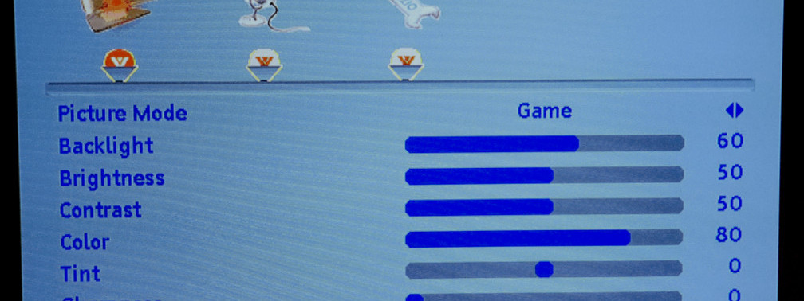
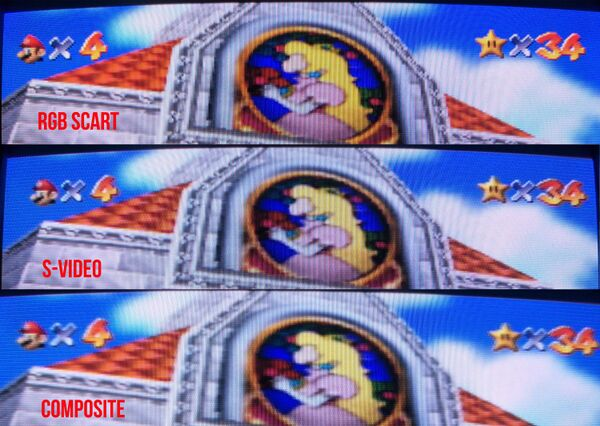
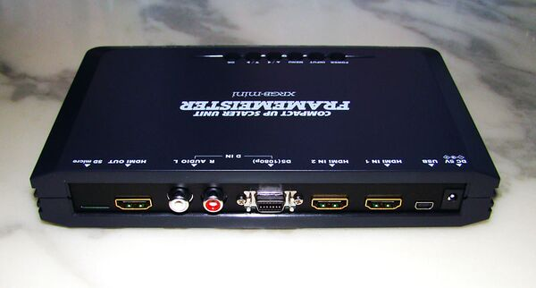
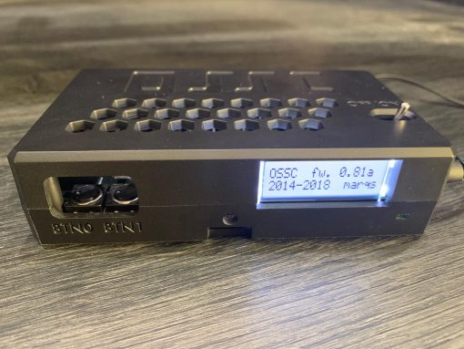

DisplayStation
Troubleshooting
Common Questions and Answers
- The image is "muddy" and colors blur together.
- I have serious input lag.
- My TV does not have analogue inputs.
Q: The image is "muddy" and colors blur together.

A: Understand that not all video connections output the same quality. From the figure above you can get a feel for some ot the
differences in picture quality. Most games will not suffer too terribly because they were designed to be played on a CRT which inherently
blurs the picture, but a flat panel TV will sometimes misinterpret the colors and brightness leading to a horrible mess.
The only ways to fix this is to either get a better cable type or purchase a device that can process the image instead of your TV. These
can be both upscalers and de-interlacers that will convert the console's output to digital but they can be very expensive.
Q: I have serious input lag.
A: Developers of older games wanted to make their games as tough as nails to increase play time, and took advantage of CRT TVs having almost
no image latency to push button timings to the extreme. Modern TVs are designed to try and "improve" the picture quality, but at the cost
of added lag between frames. This means you are playing with a delay of up to 6 frames that can ruin the experience playing older games.
The best thing to do is see if your TV has a "gaming" mode that prioritizes low latency for the best experience playing fighting games, multiplayer
games, or other games that require low input lag.
Q: My TV does not have analogue inputs.
Many dedicated fans have created devices that are designed to upscale the image to a higher resolution and also add extra processing like adding or removing scanlines as well as other fancy features. These are devices that sit between the console and the TV, and range in features and price
Check out hazard-city's website if you want to learn more about specific devices and what they can do for you. I recommend getting either the RetroTink 2x or OSSC. The RetroTink 5x gets an honorable mention, but it is really expensive.
Cables Televisions